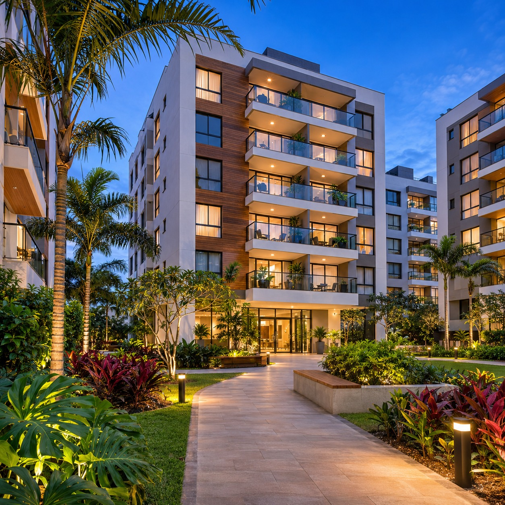

Um chamado aberto.
Um problema a menos.
Registre o que precisa de atenção, envie fotos e acompanhe cada etapa do atendimento.
Organizar meus chamados Manutenção da área comumEXEMPLO
123
SolicitadoEm atendimentoResolvido
Menos complicação no dia a dia. Mais tempo para viver bem. Conecte pessoas, organize serviços e cuide do lugar que você chama de lar.

Da solicitação à solução, em um só lugar.
Uma plataforma para conectar o condomínio inteiro e deixar as pequenas e grandes tarefas mais simples.
Registre o que precisa de atenção, envie fotos e acompanhe cada etapa do atendimento.
Organizar meus chamadosFale com quem pode ajudar e mantenha as conversas do condomínio organizadas.
Abrir conversasConsulte os espaços comuns e organize suas reservas com praticidade.
Explorar reservasComunicados e novidades reunidos para não perder o que é importante.
Do cadastro ao atendimento, cada etapa tem seu lugar.
Crie sua conta como morador, síndico ou prestador e faça parte da comunidade.
Abra chamados, encontre profissionais, converse e reserve espaços do condomínio.
Veja as atualizações, consulte o histórico e avalie o atendimento recebido.
Faça parte de uma comunidade mais próxima e organizada.